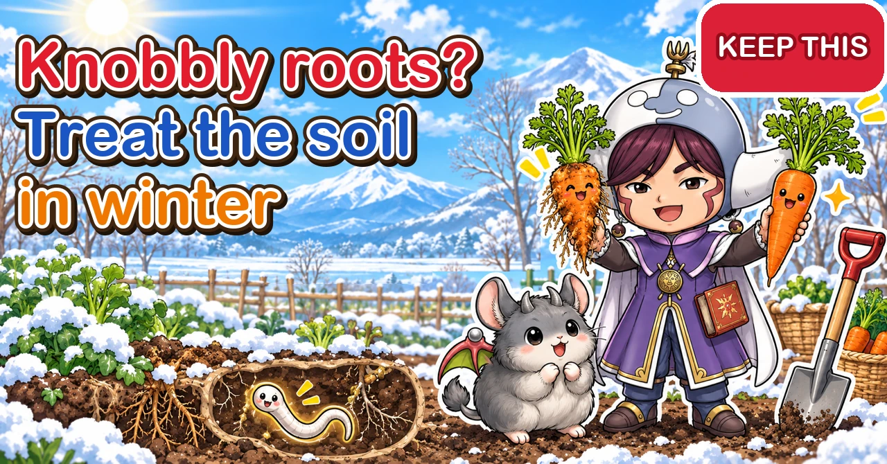

Nematodes 🥕 Knobbly roots are treated through the soil, in winter

🥕 "I pulled up my cucumbers at the end of summer and the roots were covered in lumps."
🥕 "My winter carrots came up knobbly and hairy all over."
🥕 "Is this the same as clubroot?"
Hello, I'm Eiko. Eight years of growing vegetables organically and without pesticides, and a teaching licence in science.
You clear the cucumbers or okra at the end of summer and the roots are lumpy all over. You lift winter carrots and they're knobbly, with a beard of hairy roots. It's a common sight in home plots — and it may be the work of nematodes in the soil.
Nematodes are too small to see, so it's hard to know what's going on. But the damage has clear features, and the control methods are well established. Better still, pesticide-free control works best in winter, when there are few crops in the ground. This article covers what nematodes are and which kinds cause trouble, how to recognise the damage, which crops suffer, control without pesticides, and the soil treatment you can do over winter.
Looks like: poor growth, wilting in the midday sun, dull leaves that don't respond to feeding; many round lumps on the roots (root-knot nematodes); brown, damaged roots with few fine roots (root-lesion nematodes); carrots and daikon that are galled, forked, bearded with fine roots, or dark-spotted.
Most at risk: the cucumber family (cucumbers, melons, watermelons, squash), okra, tomatoes and aubergines, and root crops such as carrots, burdock and daikon.
What to do: don't plant susceptible crops in the same spot year after year; check roots when you clear and note where galls appeared; dig deep in winter to swap topsoil and subsoil; feed soil life with rice bran and compost; solarise in summer; grow marigolds or other "trap" plants and dig them in.

What this diagram says （図解の文字）
- Look at the roots and you'll know
- "The two troublesome nematodes": "Root-knot nematode: lumps on the roots" ／ "Root-lesion nematode: rotting roots, spots on the skin"
- "Damage to carrots": "galls, forking, hairy roots"
- "Easily confused": "Big galls on cabbage-family roots are a different disease (clubroot)" ／ "Beads on bean roots are nodules (useful)"
- "Most nematodes are harmless. Only a few cause trouble"
① What nematodes are
Too small to see
Nematodes are tiny, thread-like worms. Most are under 1/25 in (1 mm) long and almost invisible to the naked eye. Soil is home to a great many kinds.
Most are harmless
Most soil nematodes don't harm vegetables. Many are actually useful, feeding on soil bacteria and fungi and helping organic matter break down.
Only some kinds damage vegetables. So rather than "nematodes = pests", think "a few troublesome kinds cause damage when they build up too far".
They can hardly move by themselves
Plant-damaging nematodes can't travel far on their own. They drift slowly with the movement of water in the soil — and they hitch rides in soil, on seedlings, tools and boots, spreading to new places.
So in a spot where they've built up, keep planting susceptible crops and their numbers keep climbing.
A year in the life (root-knot nematodes)
- They overwinter in the soil as eggs or young
- From spring into summer, as the soil warms, the young hatch and enter nearby roots
- Inside the root they create a gall and grow, feeding from it
- Inside the gall they lay masses of eggs
- The next generation hatches and enters roots again
While the soil is warm this cycle repeats several times and numbers grow. Generations pile up underground while your summer crops grow — which is why galls become obvious from late summer into autumn.
② The troublesome kinds
Root-knot nematodes
They get inside the root, feed and grow there, and make galls of various sizes. In galled roots the vessels that carry water and nutrients don't work properly, and the whole plant grows poorly.
- Lots of round, knobbly lumps on the roots
- The lumps are part of the root and won't rub off with a finger
- Especially obvious on cucumbers, okra, tomatoes and carrots
Root-lesion nematodes
They enter through the root surface and move about inside, damaging it and making it rot. They don't form galls.
- Roots go brown and damaged, with fewer fine roots
- Small dark spots or pits on the skin of daikon and carrots
- Plants grow poorly
Root-knot galls aren't clubroot
Some people call root-knot damage "clubroot", but clubroot on Chinese cabbage, cabbage, turnips and other cabbage-family crops is caused by something else entirely — a fungus-like organism, not a nematode.
- Root-knot galls: lots of small round lumps strung along the roots like beads. Common on cucumbers, okra, carrots and the like
- Clubroot on the cabbage family: roots swell into large, misshapen clubs. On Chinese cabbage, cabbage, turnips and so on
Different causes need different control. If you find big swellings on cabbage-family roots, suspect clubroot, not nematodes.
③ Recognising the damage
How the plants look
From above ground, nematode damage can be hard to tell from other causes:
- Plants in one area grow worse than others planted at the same time
- They wilt easily at midday on sunny days and recover by evening
- Leaves are a poor colour and don't recover with feeding
- Fewer, smaller fruit
When these show up together in one part of the plot, suspect lots of nematodes in that soil.
Looking at the roots is best
The surest check is the roots themselves.
- For a growing plant, dig gently a little away from the base and look at part of the root system
- For a finished plant, dig up the whole root and look at all of it
- Washing roots in water makes galls and damage easier to see
Lots of knobbly lumps make root-knot nematodes very likely.
Carrots and daikon
With root crops the damage is on the part you eat, so it's easy to spot:
- Covered in galls
- Forked into two or three legs
- A thick beard of fine roots
- Dark spots or pits on the skin
- Thin roots that don't fill out
A forked carrot isn't always nematodes
Carrots and daikon can fork or bend for other reasons too:
- The root tip hit a stone or a hard clod
- The tip touched a lump of fertiliser and was damaged
- The soil was dug too shallow for the root to grow straight
Nematode damage comes with galls, a thick beard of fine roots or spots on the skin. Don't judge on forking alone — look closely at the surface.
How it gets worse
Damage often goes unnoticed in the first year, then gets steadily worse as you keep growing the same family in the same spot.
- Year 1: a few plants grow slightly worse; the roots have a few small galls
- Years 2–3: more plants have galls and they get bigger; part of the plot is clearly struggling
- After that: it can reach the point where nothing you plant there grows
Catch it early by looking at the roots, and the treatment is that much lighter.
Damaged vegetables are still edible
Nematode-damaged carrots and daikon look bad, but peel them or cut away the damaged parts and they're fine to eat. If they've reached a decent size, don't throw them out.

What this diagram says （図解の文字）
- Keep planting the same family and they multiply
- "How they build up": "Year 1" → "Year 2" → "Year 3" — "Keep growing susceptible crops and there's food for them every year"
- "Crops most at risk": "the cucumber family, okra, the tomato family, root crops"
- "Follow with a different family": okra → carrot ✕ ／ okra → onion ○
- "Nematodes can hardly move by themselves. Growing the same crop again is what multiplies them"
④ Crops that suffer
Prone to root-knot nematodes
- Cucumber family: cucumbers, melons, watermelons, squash, bitter gourd
- Okra
- Tomato family: tomatoes, aubergines, peppers
- Root crops: carrots, burdock
- Others: peanuts, among others
Okra and cucumbers are especially prone to galls. Grow them in the same spot year after year and root-knot nematodes in the soil multiply fast.
Prone to root-lesion nematodes
Root crops such as daikon, carrots and burdock also suffer from root-lesion nematodes, which leave dark spots and pits on the skin. Strawberries and potatoes can have damaged roots and poor growth too. Where root crops get the same spots every year, suspect root-lesion nematodes.
Combinations to avoid
Following one susceptible crop with another makes damage worse:
- Root crops such as carrots or daikon after okra or cucumbers
- Carrots or daikon after sweetcorn (root-knot nematodes are said to build up after sweetcorn)
- Root crops again where carrots came up galled
In those spots it's safer to plant something from another family, such as leafy greens.
Good crops to follow
After nematode damage, choose a crop that suffers less. Combinations often suggested for home plots:
- After sweetcorn: leafy crops such as lettuce, Chinese cabbage, spinach, broccoli
- After potatoes: cabbage, komatsuna, broccoli
- After okra: onions
Generally, rotating crops grown for different parts — roots → leaves → fruit — keeps the same family from following itself and stops nematodes and diseases building up.
Most active from summer into autumn
Nematodes are most active when the soil is warm. Some say they're livelier once the extreme midsummer heat eases a little than at its peak. That's why root damage becomes noticeable from the end of the summer crops into autumn. In winter they slow down.
⑤ Control without pesticides
1. Avoid growing the same crop in the same place
The most basic step: don't plant susceptible crops in the same spot year after year.
- Where galls appeared, don't plant the same family next year
- Move it for 2–3 years (rotation)
- Follow susceptible crops with another family, such as leafy greens
In a small home plot rotation can be hard. If so, combine the methods below.
2. Dig deep and turn the soil in winter
Most nematodes live in the top 10–12 in (25–30 cm), the well-worked topsoil. There are few deeper down. So swapping topsoil and subsoil — what Japanese growers call tenchi-gaeshi, "turning heaven and earth" — sends nematode-rich soil down and brings nematode-poor soil up.
- Dig out the top 10–12 in (25–30 cm) along one side of the bed and set it aside
- Dig out the deeper soil beneath and put it on the other side
- Put the topsoil you dug first into the hole
- Cover it with the soil from deeper down
For a simpler version, just dig deep with a spade and flip it so soil from 8–12 in (20–30 cm) down ends up on top. That alone can help.
Winter, with no crops in the ground, is the time for it, and exposing the soil to cold improves it too. But where there are lots of stones or a hard layer deep down, you may bring those up — go by how your soil looks.
Tips for deep digging
- Do it on a day when the soil is on the dry side. Turning muddy soil after rain makes it set hard
- Don't try to do the whole plot at once — start where galls appeared and go one bed at a time
- Decide where the soil will go before you start: topsoil on one side of the bed, subsoil on the other
- When you're done, level the surface and leave it to the winter cold
- Finish at least a month before spring planting, then add compost and base fertiliser and let the soil settle
Since nematodes travel with water, keep water from pooling. Dig trenches between beds where drainage is poor.
3. Feed soil life with rice bran and the like
Adding organic matter such as rice bran and compost boosts soil microbes, harmless nematodes and other small creatures. In soil with many kinds of life in balance, it's said to be harder for the troublesome nematodes alone to build up too far.
- In winter, scatter rice bran on empty beds and mix it in
- Add compost every year
- You can also cover with clear plastic after scattering rice bran, to warm the soil and boost microbes
Gradually moving ground that's only had synthetic fertiliser over to organic matter makes its soil life richer.
Winter rice bran under clear plastic
One way to treat galled ground over winter:
- Clear away the roots after harvest, taking galled roots off the plot
- Scatter one or two handfuls of rice bran per square yard (m²) and mix it well into the surface soil
- If the soil is dry, water lightly
- Lay clear plastic or mulch film tight on the soil and hold the edges down with soil
- Leave it all winter and remove it when you prepare for spring planting
Warming the soil a little under clear film helps microbes keep working through winter.
4. Solarise in summer
In the hot part of summer, water the soil, cover it tightly with clear plastic and let the sun heat it. This "solarisation" reduces nematodes in the upper soil. Do it between clearing summer crops and planting autumn ones. If galls were bad, heat it for at least two weeks — ideally about a month — before planting the next crop.
Solarising, step by step
- Clear the summer crops, removing roots and weeds
- Dig the soil well; if you're adding compost or rice bran, mix it in now
- Water heavily so the soil is thoroughly moist
- Lay clear mulch film or plastic tight with no gaps, burying the edges in soil
- Leave it for two weeks to a month in a sunny spell
- After removing it, don't dig deep — just get it ready for the next crop
Deep digging brings up unheated soil from below, so after solarising, only work the surface.
5. Grow "trap" plants
Plants that reduce nematodes are known in Japan as taikō shokubutsu — "counter plants".
- Marigolds: African and French marigolds are said to reduce root-knot and root-lesion nematodes
- Crotalaria: a legume green manure
- Oats (nematode-resistant varieties): a cereal green manure
A few plants won't do much. The advice is to grow them for at least 2–3 months, including summer, so their roots fill the soil, then chop them and dig them in.
6. Making the most of marigolds
In a home plot, marigolds — which you can also enjoy as flowers — are the easiest trap plant to fit in.
- Plant them between summer crops or at the corners of beds
- Pinch out the first bud so side shoots form and the plant grows big
- Pick spent flowers, chop them finely and mix them into the soil
- At the end of the season, chop the whole plant and dig it in
A few marigolds next to your vegetables have limited effect. Where nematodes are bad, plant a block of them in that spot, grow them well, then dig them in.
Growing marigolds well
- Grow from seed or buy plants. Seed struggles in midsummer, so buy plants or take cuttings
- At about 4 in (10 cm) tall, pinch out the first bud at the tip; more side shoots form and the plant gets bigger
- Pick off flowers as they fade and new ones keep coming
- For cuttings, take a stem with no flower, strip the lower leaves, stand it in water for about two hours, then push it into soil
- They die around the first frost, so chop and dig them in before then. Dead plants can be chopped and buried too
7. Don't bring them in on plants or soil
Nematodes travel with roots and soil.
- When buying plants, check the roots and pick ones with plenty of white roots
- Don't move soil from another plot, or from a galled spot, to somewhere else
- Knock the soil off tools and boots used in a galled spot before going elsewhere

What this diagram says （図解の文字）
- Soil treatments for winter
- "Check the roots and take galled roots off the plot" ／ "Dig deep and swap topsoil and subsoil" ／ "Feed soil life with rice bran"
- "In summer, heat the soil with the sun" ／ "Grow trap plants and dig them in" ／ "Record the spot"
- "Winter, with few crops in the ground, is the best time to treat the soil"
Keep soil life rich all the time
Nematode control isn't only special jobs — it's also the sum of your everyday soil care.
- Add compost or other organic matter every year
- Compost healthy crop debris and return it to the soil (but not galled roots)
- Don't follow a crop with the same family; rotate many kinds of vegetable
- In gaps between crops, grow green manure or trap plants instead of leaving soil bare
A plot with many kinds of soil life in balance is also one where troublesome nematodes find it hard to build up.
⑥ After harvest, and in winter
Always check the roots
Checking the roots when you clear summer crops, and when you lift winter root crops, is the first step in nematode control.
- Look for galls on the roots of plants you pull
- Note where galls appeared in your growing notes
- Decide now what will go in that spot next
Plant the next crop without looking at the roots and you'll repeat the same damage.
Mark the spot and keep notes
Unless you mark galled spots over winter, you won't remember them by spring.
- Push a short stick or label in where a galled plant grew
- Sketch a simple plan of the plot and mark galled spots
- Write down the crop and how bad the galls were
- Next year, add what you planted there and how its roots looked
After a few years of notes you'll see where nematodes are worst and which combinations cause trouble.
Galled roots go off the plot
Galled roots still hold plenty of nematodes and eggs. Knock the soil off and take them off the plot to dispose of. Don't leave them on the beds or put them on the compost heap.
The winter treatment
In winter nematodes are sluggish and few crops are in. If you're controlling them without pesticides, this is the perfect time.
- After harvest, check the roots and mark galled spots
- Take galled roots off the plot
- Dig deep and turn the soil
- Mix in rice bran or compost
- Choose less susceptible crops for those spots in spring
⑦ Through the year (central Japan)
- December–February: deep digging; add rice bran or compost. In next year's plan, decide how to use galled spots
- March–April: check roots when choosing plants. Put less susceptible crops in galled spots
- May–June: plant marigolds between summer crops and at the corners of beds
- July–August: check roots when clearing summer crops. If there are galls, solarise
- September–November: plant autumn crops away from galled spots. Chop and dig in marigolds
- November–December: check and record the roots when you lift carrots and daikon
Elsewhere, shift these by season: deep digging while the ground is bare and workable in winter, solarising in your hottest, sunniest weeks, and marigolds dug in before the first frost.
⑧ Crop by crop
Okra
Very prone to galls. When you clear it, dig deep with a spade and check the roots. Where galls were bad, don't plant okra or root crops there the next year.
Cucumbers, melons and watermelons
The cucumber family is prone to root-knot nematodes. Some plants on sale are grafted onto nematode-resistant rootstocks. Where damage comes every year, choosing these is one option.
Choosing grafted plants
A grafted plant is the variety you want joined onto a "rootstock" with resistance to diseases or nematodes. Because the roots are the rootstock's, it stands up better to trouble in the soil.
- The label often says what the rootstock resists — check it
- Where nematodes strike every year, choose a rootstock described as nematode-resistant
- Plant so the graft union stays above the soil. Bury it and the top variety roots itself, and you lose the rootstock's strength
Grafted plants cost more than ordinary ones, but in problem spots they're worth it.
Tomatoes and aubergines
The tomato family gets root-knot nematodes too, and grafted plants on resistant rootstocks are available. Check the label.
Carrots, burdock and daikon
The root itself is damaged, so the effect on looks is big. Sow away from spots that galled last time, and avoid following okra, cucumbers or sweetcorn.
Peanuts
Peanuts can suffer from nematodes too. Don't follow beans with beans either.
Burdock, yams and other long roots
Crops whose roots run deep, like burdock, reach further into the soil and are more exposed to nematodes. Check especially carefully that the spot didn't gall last time.
Strawberries
Strawberries sit in one place from planting until the following spring, so soil condition before planting matters. Avoid spots that galled last time and choose plants with white, healthy roots.
⑨ Containers
Take care reusing compost
If roots in a container were galled, reusing that compost as it is can pass the damage to the next crop.
- Don't use galled compost for other vegetables
- To reuse it, put it in black plastic bags in the sun in summer and let the heat cook it
- Top up with, or replace with, fresh compost
Because there's so little soil, containers are in some ways easier to fix than open ground: you can simply change the compost.
⑩ Where growers disagree, and common mistakes
Does rice bran work? One view is that feeding soil life with rice bran reduces troublesome nematodes. Whether rice bran alone makes a big difference isn't clear. Combine it with deep digging, rotation and solarisation.
Is planting marigolds enough? Some say a few marigolds beside your vegetables help; others say trap plants only work when grown as a block for 2–3 months or more and dug in. Where nematodes are bad, grow them well and dig them in.
Deep digging every year? It sends nematode-rich topsoil down, but it's heavy work and can bring up stones or hard soil from below. Realistically, do it only where damage is bad — say once every few years — going by how your soil looks.
Common mistakes:
- Planting the next crop without looking at the roots — you miss the damage and repeat it. Check roots when you clear
- Throwing galled roots back on the plot — nematodes and eggs stay in the soil. Take them off the plot
- Sowing carrots after okra — a recipe for galled carrots. Follow with another family
- Feeding to perk a plant up — nematode-damaged roots can't take it up. Check the roots before deciding
- Moving soil from a galled spot elsewhere — the nematodes go with it
⑪ Questions people ask
Are there pesticides for nematodes? Yes, there are products you mix into the soil. If you use one, always check the crops, timing and amount on the label. Without pesticides, the core is combining the methods in this article: rotation, deep digging, solarisation, trap plants and organic matter to feed soil life.
Can I just buy new soil and swap it? In a small space you can replace the topsoil. But nematodes may remain deeper down and in the surrounding soil. Even after swapping, still avoid planting susceptible crops back to back and leaving galled roots in the plot.
Can I plant straight away after pulling galled roots? Avoid putting the same family straight back. Solarise first if the season suits; in winter, deep-dig and treat with rice bran first. If you're in a hurry, choose something less susceptible, such as leafy greens.
Only one plant had galls. Even one shows nematodes are in that soil. Check the neighbours' roots when you clear them. If it's only round that plant, mark the spot and avoid susceptible crops there next time.
I rent my plot and don't know what the last person grew. In the first year you won't know where nematodes are worst. Spread susceptible crops over several spots rather than one, and you'll see where damage appears. Check roots when you clear and record the spots, and from the second year planning gets much easier.
Can I get rid of them completely? No — you can't remove them entirely from soil. The goal is to keep numbers low enough that there's no damage, in soil where they don't build up too far.
My Chinese cabbage had big lumps on its roots. Nematodes? Large swellings on the roots of Chinese cabbage, cabbage, turnips and other cabbage-family crops are more likely clubroot, a different disease with a different control.
Aren't lumpy roots useful nodules? Bean-family roots carry small beads called nodules, home to bacteria that capture nitrogen from the air. Those help the plant and are nothing to do with nematode galls. Nodules sit round on the root surface and usually pinch off with your fingers; nematode galls are part of the root and won't come off. Don't panic and pull beans because of beads on their roots.
My winter carrots had galls. What should go there in spring? Don't plant carrots, burdock or the cucumber family there in spring. Grow another family such as leafy greens, or rest the soil with marigolds or other trap plants. Deep digging over winter makes it safer still.
Science bit: four whys 🔬
Why do roots form galls? Young root-knot nematodes enter the root near its tip. They act on the cells inside, making the cells around them swell up hugely, and feed from those cells continuously. Those swollen cells round the nematode make the root bulge locally — that's the gall. The nematode grows inside it and lays masses of eggs.
In galled roots the vessels that carry water and nutrients are distorted and don't work properly. That's why plants wilt easily and grow poorly.
Why does growing the same crop multiply them? Without roots to feed on, nematodes can't multiply. Keep planting susceptible crops in one place and, for the nematodes, dinner is served every year — generation after generation, their numbers climb. Plant crops they can't feed on, or grow trap plants, and they can't multiply and numbers fall. That's why rotation works.
Why are there fewer nematodes deep down? Most vegetable roots spread in the top 12 in (30 cm) or so of soft, well-worked soil. Nematodes gather in that shallow soil, where their food is. Deeper soil has few roots and little air — a poor place for them to live. That's why bringing deep soil to the surface lets you grow in nematode-poor soil for a while.
Why don't they build up as much in lively soil? Soil is also home to nematodes' natural enemies: tiny creatures that eat them, and fungi that trap them. Soil rich in organic matter has more of these, and that's thought to help keep the troublesome nematodes from building up on their own. Keeping soil life in balance is long-term nematode control.
To sum up
- ✅ Most nematodes are harmless. The trouble comes from root-knot nematodes (galls) and root-lesion nematodes (rotting roots)
- ✅ Signs: poor growth, midday wilting, galled roots, galled or forked carrots and daikon
- ✅ Big swellings on cabbage-family roots may be a different disease (clubroot)
- ✅ Most at risk: the cucumber family, okra, the tomato family, carrots and burdock
- ✅ Nematodes can barely move. They multiply when the same crop is grown again, and travel in soil and on plants
- ✅ Rotate. After galls, follow with a different family
- ✅ In winter, dig deep to swap topsoil and subsoil; feed soil life with rice bran and compost
- ✅ In summer, solarise. Grow marigolds and other trap plants as a block, then dig them in
- ✅ Check roots when you clear; take galled roots off the plot and record the spot
- ✅ A forked carrot may just have hit a stone or fertiliser — look for galls, a beard of roots and spots
- ✅ Damage worsens year by year. Look at the roots and catch it early
Nematodes are invisible, but the roots show you where they are. And even after they've built up, keeping up a good planting order and winter care brings their numbers down bit by bit. This winter, take the carrots you lift and the roots of plants you clear, wash them well and have a look. Planning next year's plot gets much easier 🥕
Thank you for reading!